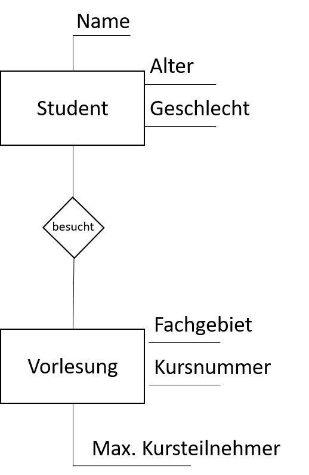
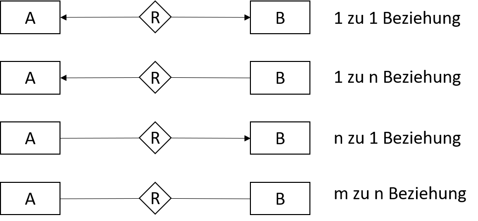

Deskriptive Spezifikationen
Marcel Lüthi Departement Mathematik und Informatik
Entity Relationship Model
Entität: Individuell identifizierbares Objekt der Wirklichkeit
Wikipedia
- ER-Diagramme sind Vorläufer der UML Klassendiagramme
- Drei Kernstrukturen:
- Entitäten
- Beziehungen zwischen Entitäten
- Attribute der Entitäten

ERM: Kardinalitäten
- Keine standardisierte Notation.
- Unterschiedliche Varianten möglich
ERM: Beispiel

- Beziehungen können partiell sein:
- Nicht alle Elemente sind Teil der Beziehung
- Beispiel: Nicht jeder Mitarbeiter leitet ein Projekt
Entity Relationship Model
- Komplementieren Datenflussdiagramme
- Vergl. OO: Daten und Operationen sind zusammengefasst
- Noch immer sehr populär für Datenmodellierung
- Einfach - daher auch für nicht Experten verständlich
- Nur Semi-formal
- Keine Einheitliche Notation oder Semantik
Logische Spezifikation

- Logik (erster Stufe) lässt uns:
- Eigenschaften formal ausdrücken
- Neue Eigenschaften ableiten
Logik erster Stufe
- Audruck aus Variablen, Funktionen, Konstanten, Klammern.
- wie in Arithmetik
- Typ eines Ausdrucks ist Wahr oder Falsch
- Ausdrücke können verbunden werden mit
und ($\texttt{and}$),oder ($\texttt{or}$),impliziert ($\texttt{implies}$),nicht ($\texttt{not}$),genau dann ($\texttt{iff}$) - Quantoren:
Existiert ($\texttt{exists}$) undfür alle
($\texttt{forall}$)
Logik erster Stufe: Beispielformeln
- $x > y \texttt{ and } y > z \texttt{ implies } x > z $
- $x = y \texttt{ iff } y = x$
- $\texttt{forall } x,y,z \; (x > y \texttt{ and } y > z \texttt{ implies } x > z)$
- $ x + 1 < x - 1$
- $ \texttt{forall } x \; (\texttt{ exists } \; y \; (y=x + z))$
- $x > 3 \texttt{ or } x < -6$
Spezifizieren von Programmen
Eigenschaft von Programm $P$ wird definiert als \[ \{\texttt{pre}(i_1, i_2, \ldots, i_n\} \\ P \\ \{\texttt{post}(o_1, o_2, \ldots, o_m, i_1, i_2, \ldots, i_n\} \\ \]- $i_1, \ldots, i_n$ sind alle Eingaben
- $o_1, \ldots, o_m$ sind alle Ausgaben
- $\texttt{pre }$ ist eine Vorbedingung (precondition)
- $\texttt{post }$ ist eine Nachbedingung (postcondition)
Beispiel 1
- Division
\[ \{ \texttt{ exists } z \; (i_1 = z \cdot i_2) \} \\ P \\ \{ o_1 = i_1 / i_2\} \]
Beispiel 2
- Division mit stärkerer Anforderung an Programm
\[ \{ i_1 > i_2 \} \\ P \\ \{ i_1 = i_2 \cdot o_1 + o_2 \texttt{ and } o_2 \ge 0 \wedge o_2 \le i_2\} \]
- Stärkere Anforderung:
- schwächere Vorbedingungen und/oder
- stärkere Nachbedingungen
Beispiel 3
- Keine Vorbedingung.
- Was macht das Programm?
\[ \{ \texttt{ true } \} \\ P \\ \{ (o = i_1 \texttt{ or } o = i_2) \texttt{ and } (o \le i_1 \texttt{ and } o \le i_2\} \]
Beispiel 4
- Grösster gemeinsamer Teiler
\begin{align} \{ & i_1 > 0 \texttt { and } i_2 > 0 \} \\ &P \\ \{ & \\ & (\texttt{ exists } z_1, z_2 \; (i_1 = o \cdot z_1 \texttt{ and } i_2 = o \cdot z_2) \\ & \texttt{ and } \texttt{ not } \\ & (\texttt{exists } h ( \texttt { exists } z_1, z_2 \\ & (i_1 = h \cdot z_1 \texttt{ and } i_2 = h \cdot z_2) \texttt{ and } h > o)) \\ &\} \end{align}
Spezifizieren von Prozeduren/Funktionen
- Prozedure und Funktionen können genau wie Programme spezifiziert werden
- Vor/Nachbedingungen haben Zugriff auf Programm variablen
\begin{align} &\{n > 0\} \\ &\text{procedure reverse(a: in out IntArray; n : in Integer)} \\ &\{\forall i (1 \le i \le n) \texttt{ implies } (a(i) = \text{old_a}(n-i+1) ) \} \end{align}
Spezifizieren von Klassen : Invarianten
- Invarianten beschreiben Eigenschaften die sich nicht ändern
- Wichtig beim spezifizieren von Klassen
- Eigenschaft muss gelten welche Methoden und in welcher Reihenfolge aufgerufen werden
\begin{align} &\text{// Invariante in Klasse Set} \\ &\text{ // Set wird mit Array impl definiert } \\ &\forall i, j \; (1 \le i \le \text{ length } \texttt{ and } 1 \le j \le \text{ length } \texttt{ and } i \neq j) \\ &\implies \text{impl}[i] \neq \text{impl}[j] \end{align}
Umsetzung in Java: JML
- JML: Java Modeling Language ( openjml.org)
public class BankAccount {
final static int MAX_BAL = 1000;
int balance;
/*@ invariant 0 <= balance &&
balance <= MAX_BAL;
@*/
/*@ requires amount >= 0;
ensures balance == \old(balance)-amount &&
\result == balance;
@*/
public int debit(int amount) {
...
}
Umsetzung in UML: OCL
- OCL: Object Constraint Language ( openjml.org)
- Designed um Eigenschaften/Einschränkungen in OO Systemen zu spezifizieren
Beispiel OO Design:

Umsetzung in UML: OCL
Beispiele von Constraints in OCL:
- context Person inv: self.alter ≥ 0
- context Person inv: self.eltern $\rightarrow$ forAll(e|e.alter>self.alter)
- context Person inv: self.eltern->size() ≤ 2
- context Person::bekommtKind()
post: self.kinder->notEmpty()
and self.kinder->size() > self.kinder@pre->size() - context Person inv: self.alter ≤ 18 implies self.autos->isEmpty()
- context Auto inv: self.erstzulassung ≥ self.baujahr
- context Person inv: Person.allInstances()->exists(p | p.autos->size() > 0)
Algebraische Spezifikationen
Algebra: Eine Menge $A$ mit Operationen $f_1, \ldots, f_n$ wobei $f_i : A \times A \times \ldots \times A \to A$
Beispiel:
- Ganze Zahlen $\mathbb{Z}$ mit
- Addition: $+ : \mathbb{Z} \times \mathbb{Z} \to \mathbb{Z}$
- Multiplikation: $\cdot : \mathbb{Z} \times \mathbb{Z} \to \mathbb{Z}$
Algebraische Spezifikationen
Heterogene Algebra: Ein System von Mengen $A_1, \ldots, A_m$ mit Operationen $f_1, \ldots, f_n$ wobei $f_i : A_{j_1} \times A_{j_2} \times \ldots \times A_{j_m} \to A_k$
- Ideal um Abstrakte Datentypen zu spezifizieren
Beispiel Strings
- Mengen : Strings $S$ und Natürliche Zahlen $\mathbb{N}$
- Konkatenation: $+ : S \times S \to S$
- Länge: $len : S \to \mathbb{N}$
Beispiel Spezifikation: Syntax
algebra StringSpec;
sets String, Char, Int, Bool;
operations
new: () -> String;
append: String, String -> String;
add: String, Char -> String;
length: String -> Int;
isEmpty: String -> Bool;
equal: String, String -> Bool
...
Beispiel Spezifikation: Semantik
...
constrains new, append, add, length, isEmpty, equal
forall [s, s1, s2: String; c: Char]
isEmpty (new ()) = true;
isEmpty (add (s, c)) = false;
length (new ()) = 0;
length (add (s, c)) = length (s) + 1;
append (s, new ()) = s;
append (s1, add (s2,c)) = add (append (s1,s2),c);
equal (new (),new ()) = true;
equal (new (), add (s, c)) = false;
equal (add (s, c), new ()) = false;
equal (add (s1, c), add (s2, c) = equal (s1,s2);
end StringSpec.
Ableitung von neuen Eigenschaften
- Können wir folgendes Statement herleiten?
append(new(), add(new(), c)) = add(new(), c)
Unit Tests
- Wie unterscheiden sich ER Diagramme von UML Klassendiagrammen?
- UML ist formal spezifiziert. Weshalb brauchen wir OCL trotzdem?
- Weshalb eignen sich algebraische Spezifikationen gut um ADTs zu spezifizieren?
- Wie können mit logischen und algebraischen Spezifikationen neue Einsichten über das System gewonnen werden?
- Wie passiert das in (formal definierten) konstruktiven Spezifikationen?